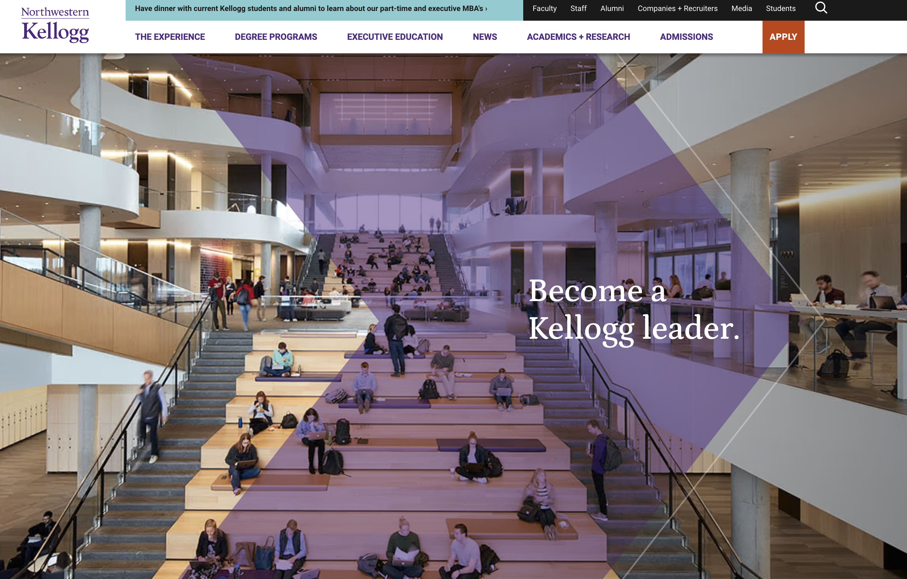
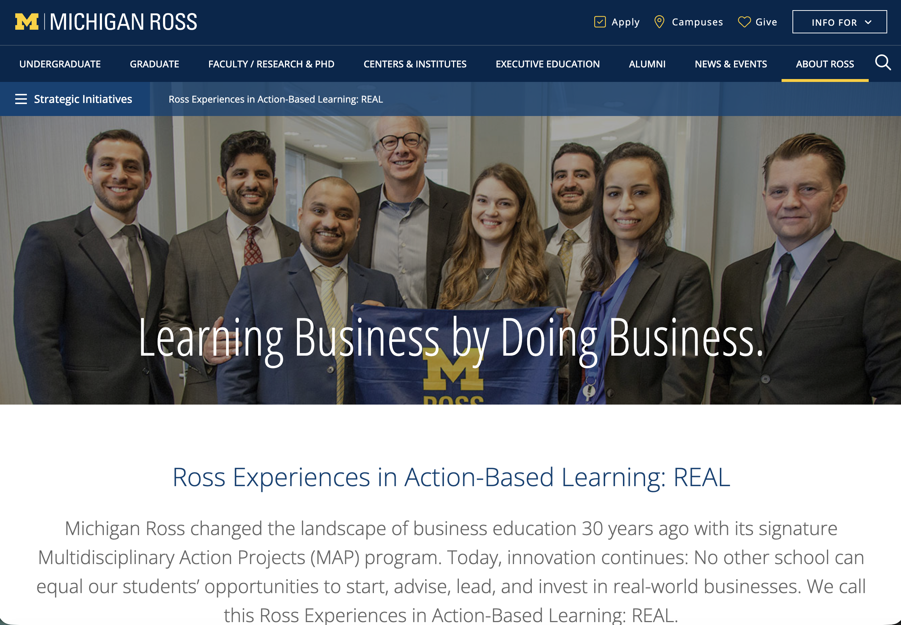
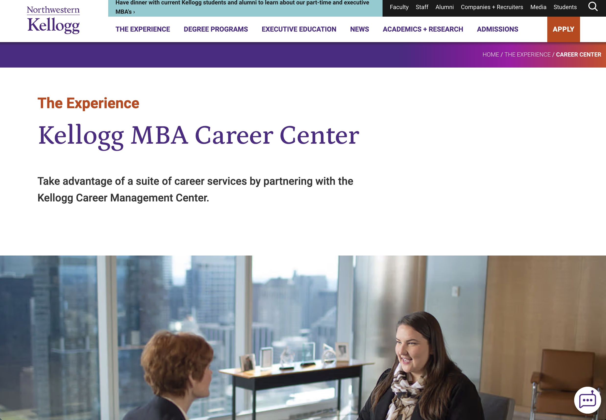
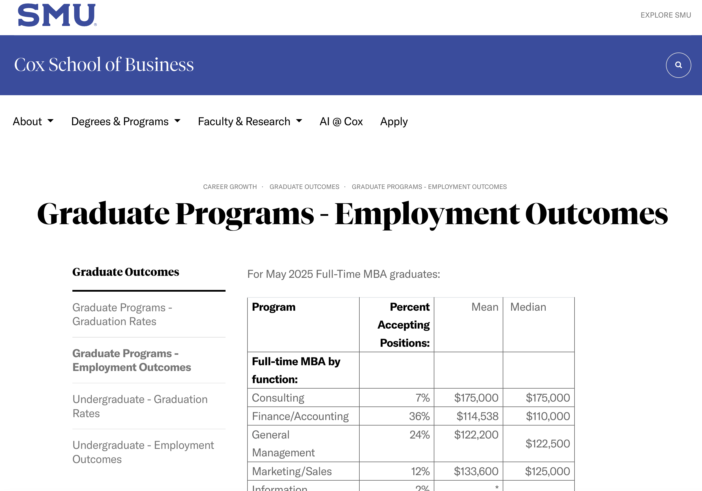
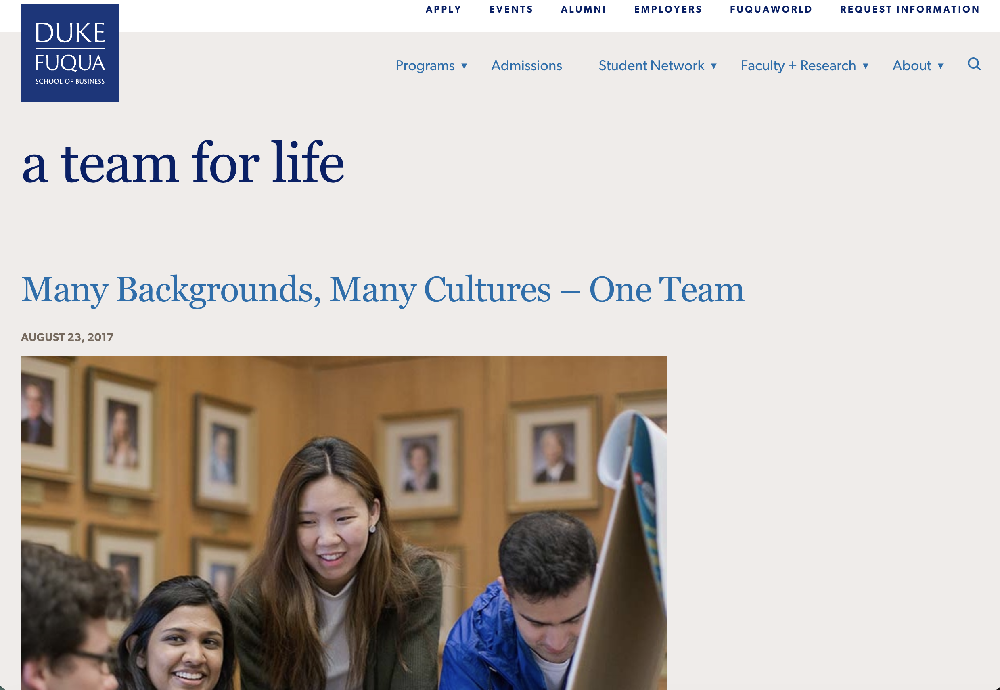
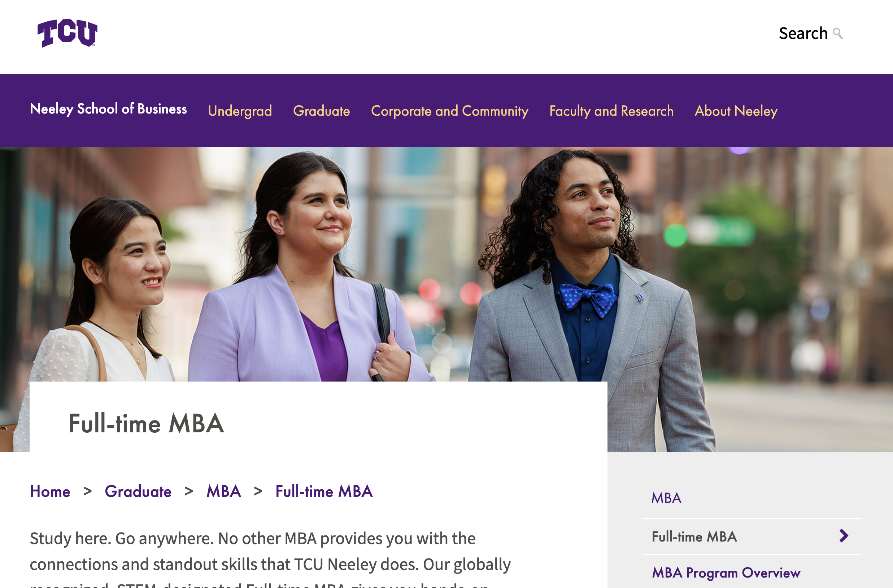

Platform Analysis
Business school websites feel different from Instagram and LinkedIn because they are not built like a feed. They are more like the main place a student goes to figure out what the program offers, what it costs, what the outcomes look like, and whether the school feels like a good fit.
Websites are where schools give the full program details, including degree options, admissions, rankings, curriculum, deadlines, and next steps.
Many business school websites focus on career outcomes, employer connections, alumni networks, leadership, and whether the degree feels worth the investment.
A strong website should also help students picture the experience by showing culture, belonging, support, hands-on learning, and flexibility.
Website Experience
A business school website should do more than list facts. It should help a student find the practical details, but it should also make them feel like they could belong there and be successful.
As I reviewed the business school websites, I paid attention to the overall experience. I looked for the things that would matter most to a prospective MBA student, including career outcomes, return on investment, networking, culture, academics, practical experience, logistics, and flexibility.
Website Standouts
I also wanted to note which websites stood out to me while I was reviewing them. These are not formal rankings. They are my observations about which sites were easiest to use, most memorable, or strongest in certain areas.
Most Visually Attractive
Kellogg felt the most polished and professional. The site gave me the clearest feeling of a high-end business school brand.
Screenshot source: Kellogg Full-Time MBA

Clearest Program Identity
Ross stood out because its action-based learning message was easy to understand. I quickly understood what made the program different.
Screenshot source: Michigan Ross REAL

Easiest to Navigate
Kellogg felt organized and easy to move through. It was simple to find information about careers, community, and program value.
Screenshot source: Kellogg Career Services

Strongest Career and ROI Message
These websites made career outcomes, employer connections, and value easy to see. They made the degree feel directly connected to future career opportunities.
Screenshot source: SMU Cox Graduate Outcomes

Strongest Culture and Belonging Message
These websites made the school feel like more than a business degree. They focused on values, community, purpose, and the kind of environment students would join.
Screenshot source: Duke Fuqua Team Life

Most Likely to Make Me Feel Successful
TCU made success feel personal and attainable, while Kellogg made success feel prestigious and expansive. Both gave me confidence, but in different ways.
Screenshot source: TCU Neeley Full-Time MBA

The website comparison showed that business school websites do a different job than Instagram or LinkedIn. Instagram can build interest and personality, and LinkedIn can highlight professional success, but the website is where the full story has to come together.
The strongest websites made the program’s value easy to understand by connecting career outcomes, culture, flexibility, academics, and return on investment. They helped me see not just what the program offered, but why a prospective student might choose it.